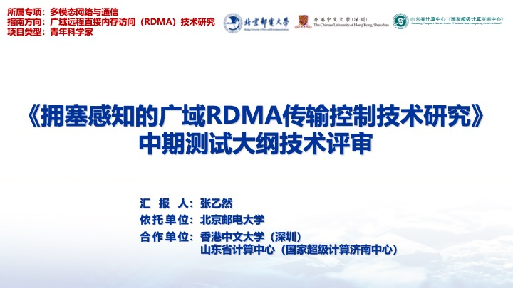
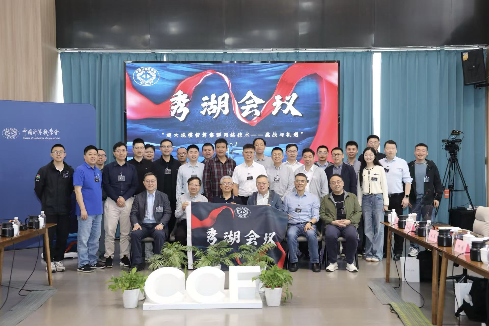
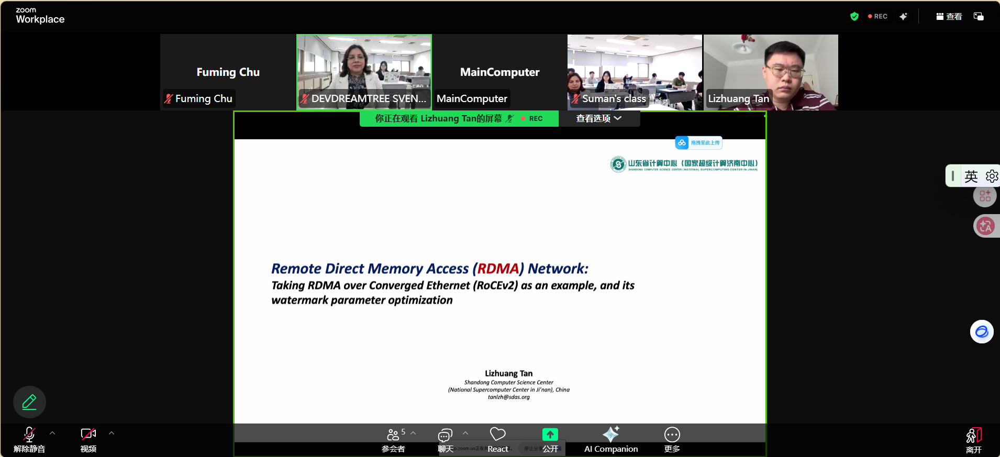
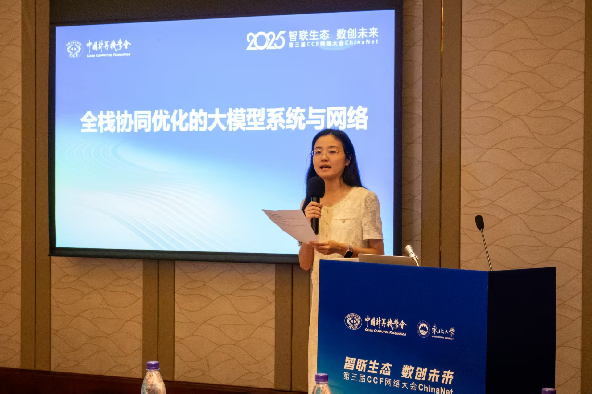
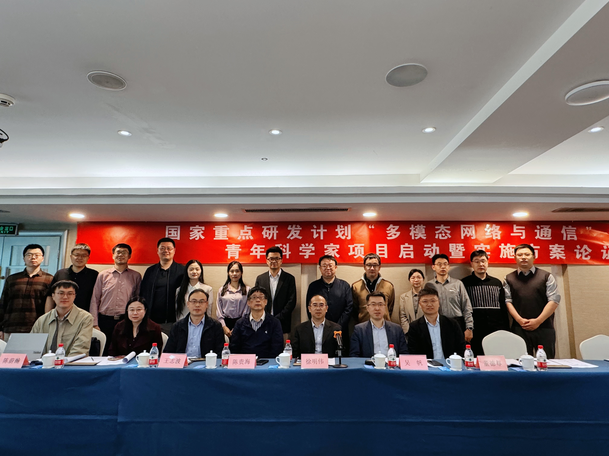

跳至正文
拥塞感知的广域RDMA传输控制技术研究
国家重点研发计划"多模态网络与通信"重点专项（青年科学家）项目
NATIONAL KEY R&D PROGRAM OF CHINA
YOUNG SCIENTIST PROJECT
菜单
项目概况
最新新闻
项目团队
创新成果
资料汇编
原型系统
NEWS & UPDATES
最新新闻
项目进展 / 学术交流
2026年6月
项目组组织中期技术测试大纲论证会。

2026年5月
项目组参加STW 2026会议并作报告。
2026年4月
项目组参加第39期CCF秀湖会议并作《广域智算网络传输控制技术》报告。

2026年4月
项目组为韩国光州科学技术院师生做RDMA调优学术报告。

2025年9月
项目组组织第三届CCF网络大会（ChinaNet-2025）“全栈协同优化的大模型系统与网络”专题论坛。

2025年4月
项目启动会召开。
